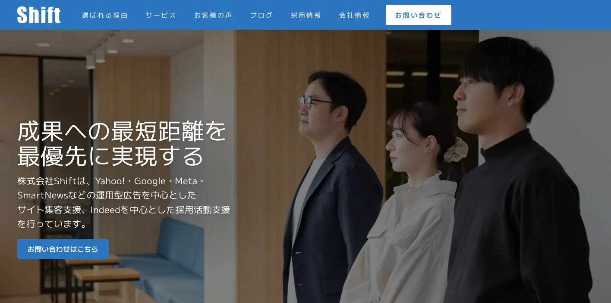
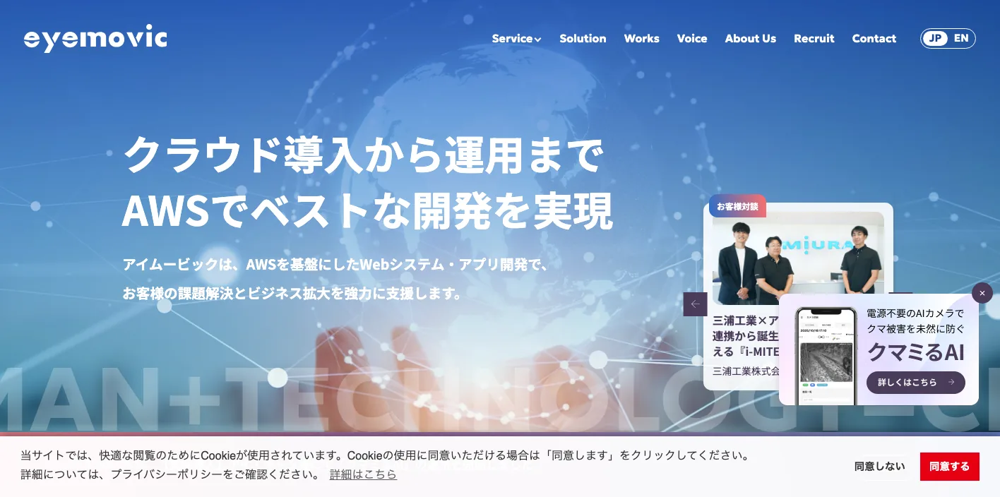
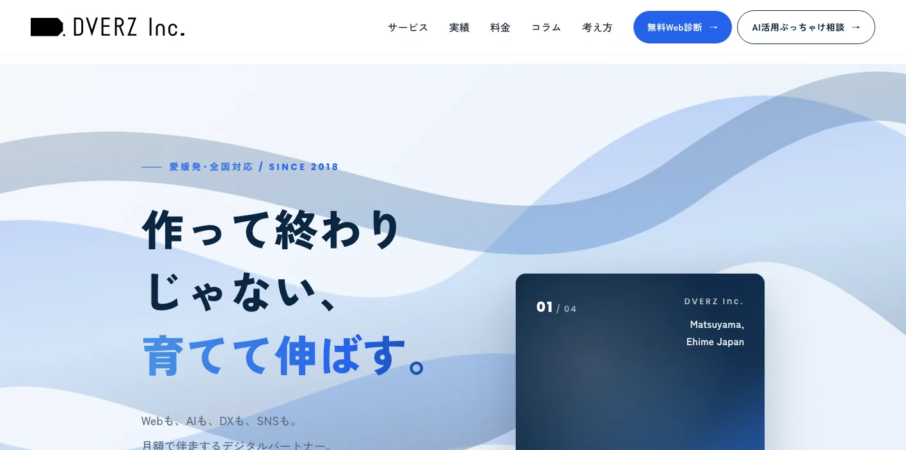
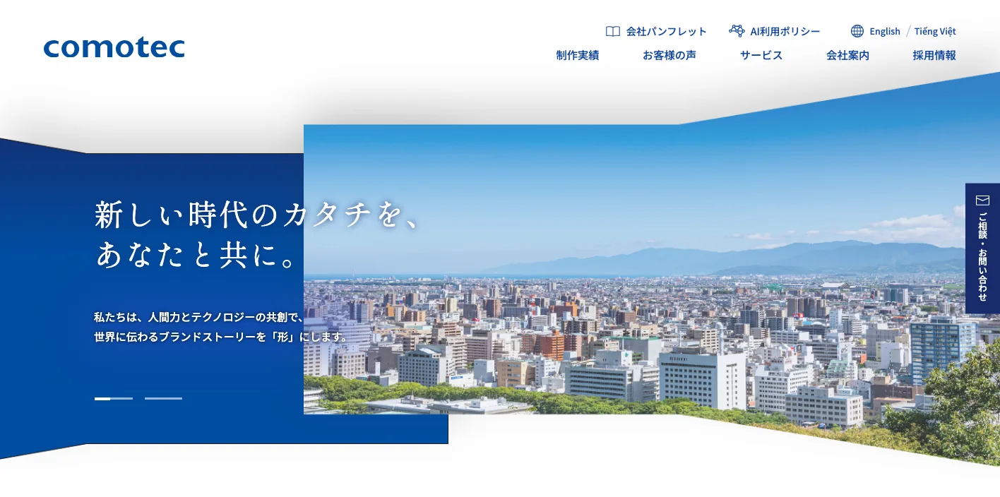
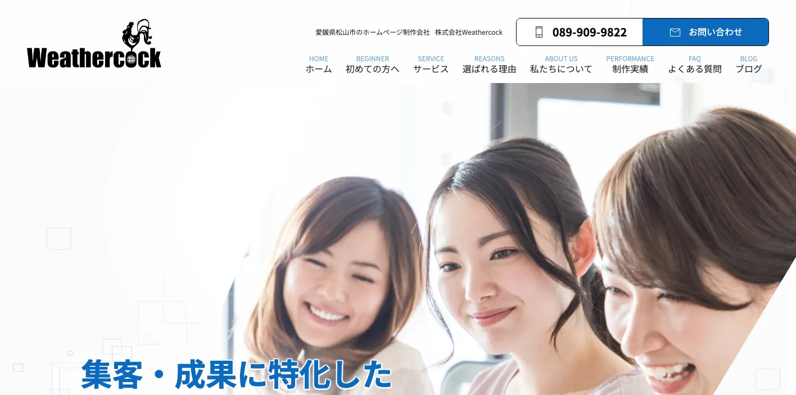
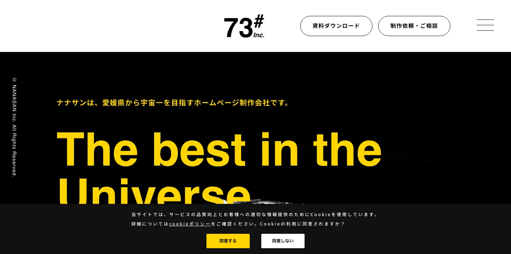
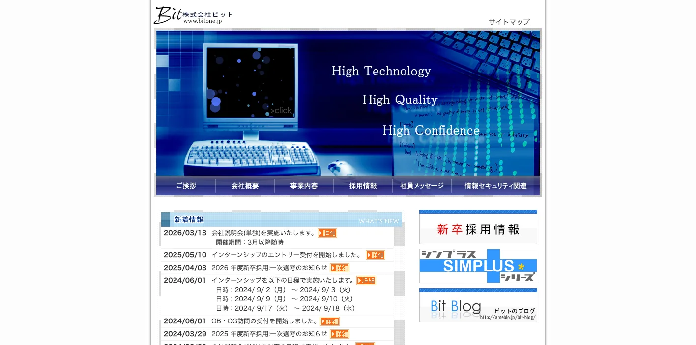
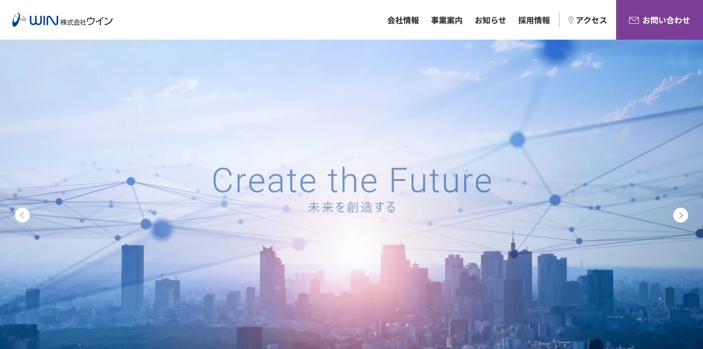
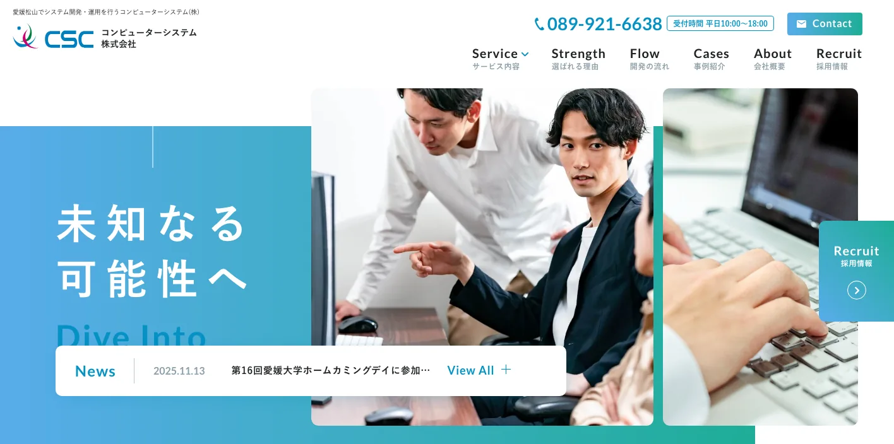
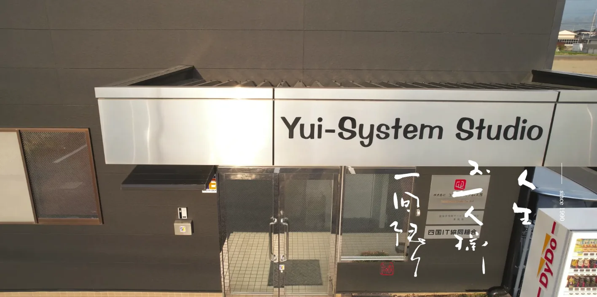

愛媛県でおすすめのLLMO会社10選｜費用相場と選び方もわかりやすく解説

愛媛県でLLMO会社を選ぶときは、「松山のホームページ制作会社」だけで探すと判断がずれます。松山市は行政、医療、教育、士業、店舗、採用が集まり、今治は造船・タオル・しまなみ海道、新居浜・西条・四国中央は製造業、南予は観光・水産・柑橘で、AIに聞かれる内容が変わるからです。
愛媛県の推計人口では、令和8年1月1日現在の県人口が1,248,018人と示されています。また、愛媛県観光客数とその消費額では、令和6年の観光客数が23,042千人、観光消費額が926億円と公表されています。つまり、愛媛県のLLMOは、地元客だけでなく、観光客、県外の取引先、採用候補者、移住検討者にも正しく説明される状態を作る必要があります。
この記事では、愛媛県でLLMOに取り組むときに候補にしたい会社、比較ポイント、費用相場、よくある質問をまとめます。LLMOの考え方から確認したい方はLLMO対策の基礎記事を、近隣県と比べたい方は香川県の記事や徳島県の記事も参考にしてください。
目次

愛媛県でおすすめのLLMO会社10選
今回は、愛媛県内に拠点や明確な対応ページがあり、Web制作、SEO、Webマーケティング、広告、システム開発、クラウド、DX支援、運用保守などの公開情報を確認しやすい会社を中心に選びました。愛媛県内では、LLMO専業を前面に出す会社はまだ多くありません。そのため、AI検索に向けた情報設計を任せやすい会社と、公式サイトの土台を作れる会社を分けて見ています。
愛媛県では、松山市だけでなく、今治市、新居浜市、西条市、四国中央市、宇和島市、八幡浜市、大洲市、内子町、しまなみ海道エリアで必要な情報が変わります。まずは下の表で、自社の地域と目的に近い会社を絞ってください。
| 会社名 | 拠点・対応 | 向いている相談 |
|---|---|---|
| 株式会社Shift | 松山市・デジタルマーケティング | 広告運用、採用支援、サイト集客、分析改善 |
| 株式会社アイムービック | 松山市・Web/システム/AWS | Webサイト制作、Webシステム、AWS、運用保守 |
| 株式会社DVERZ | 愛媛発・全国対応 | Web制作、AI活用支援、DX支援、月額伴走 |
| 株式会社コモテック | 松山市・Web制作 | ホームページ制作、EC、LP、動画、保守管理 |
| 株式会社Weathercock | 松山市・Web集客 | ホームページ制作、SEO、地域集客、料金プラン相談 |
| 株式会社ナナサン | 愛媛県・Web制作 | ホームページ制作、CMS、EC、保守管理 |
| 株式会社ビット | 松山市・ソフトウェア開発 | Web系ソフトウェア、業務システム、開発相談 |
| 株式会社ウイン | 松山市・広島/大阪対応 | システム開発、Web制作、広告デザイン、BPO |
| コンピューターシステム株式会社 | 松山市・全国拠点 | 業務ソフト、アプリ、クラウド、運用保守 |
| 株式会社ユイ・システム工房 | 松山市・システム/Web | システム開発、Webサイト制作、業務改善 |
選ぶ前に見てほしいのは、制作会社の所在地だけではありません。自社のサービスを「誰が」「どこで」「どんな条件で」探すのかを、会社側が質問してくれるかです。愛媛県内の会社でも、松山市の集客が得意な会社、システム開発に強い会社、広告運用に強い会社、観光や地域ブランドを見せるのが得意な会社では、LLMOで任せるべき範囲が変わります。
また、LLMOは「AIにおすすめされる魔法の施策」ではありません。AIが答えを作るときに参照しやすい公式情報を増やす作業です。会社概要、商品・サービス、料金、事例、地域名、FAQ、写真、問い合わせ導線が薄いままでは、どの制作会社に頼んでも成果は出にくくなります。
株式会社AIMAは愛媛県の会社ではありませんが、大阪市北区を拠点に全国対応でLLMO支援を提供しています。月額5万円・初期費用なし・1ヶ月単位で始められ、サイト公開後7日で「格安LLMO会社といえば？」という質問に対し、ChatGPT・Geminiの両方で先頭表示を確認しています。
株式会社Shift

Shiftは、松山市を拠点にデジタルマーケティング支援を行う会社です。公式サイトでは、Yahoo!、Google、Meta、SmartNewsなどの運用型広告、サイト集客支援、Indeedを中心とした採用活動支援を打ち出しています。
LLMOでは、AI検索だけを見ていても不十分です。愛媛県内で採用、集客、広告、サイト改善を同時に進めたい会社は、広告で反応した人が公式サイトで正しい情報を確認できるように、サービスページ、FAQ、実績、採用情報を整える必要があります。松山市の企業や広域採用を行う会社に向いています。
株式会社アイムービック

アイムービックは、松山市を拠点にAWS導入、AWS環境構築、Webシステム、アプリ開発、Webサイト制作、運用保守まで対応する会社です。四国を起点に国内外のエンジニアや開発チームと協力しながら課題解決を行う姿勢を示しています。
LLMOは、記事を作るだけではなく、サイト構造、CMS、表示速度、運用保守、フォーム、会員機能、クラウド環境とも関係します。医療、教育、BtoB、予約、会員管理、クラウド活用が絡む愛媛県内企業には、技術基盤まで見られる会社が合います。
株式会社DVERZ

DVERZは、愛媛発・全国対応のデザインカンパニーとして、Web制作、AI活用支援、DX支援を月額で伴走するサブスク型サービスを打ち出しています。公式サイトでは、累計400社の実績や「作って終わりじゃない、育てて伸ばす」という考え方を示しています。
LLMOでは、公開後の改善が非常に重要です。AI検索でどう見られているかを確認し、FAQを追加し、事例を増やし、採用や地域ページを更新する必要があります。愛媛県内で、制作後も伴走してもらいたい会社、AI活用やDX支援も含めて相談したい会社に向いています。
株式会社コモテック

コモテックは、松山市のWeb制作会社として、ホームページ制作、ECサイト制作、LP制作、デザイン、動画制作、保守管理を扱っています。公式サイトでは、サイト制作実績1000件以上、制作からアフターフォローまでのサポートを打ち出しています。
愛媛県内の店舗、サービス業、通販、地域企業では、まず公式サイトの基本情報を整えることがLLMOの第一歩です。商品、料金、対応エリア、事例、写真、FAQ、問い合わせ導線を分かりやすく作り直したい場合に候補になります。
株式会社Weathercock

Weathercockは、松山市で成果につながるホームページ制作、SEO対策、Web集客支援を打ち出している会社です。地域密着の制作ノウハウと実績、無料相談、料金プランを示しています。
松山市の店舗、士業、クリニック、地域サービスでは、Google検索、地図、口コミ、SNS、公式サイトの説明がつながっているかが重要です。LLMOでも、料金、対応地域、予約方法、選ばれる理由、よくある質問を公式サイトにそろえることで、AIに説明されやすくなります。
株式会社ナナサン

ナナサンは、愛媛県でホームページ制作、Webデザイン、WordPressなどのCMS構築、ECサイト構築、保守管理、アフターサポートを行う会社です。企画から制作、保守まで一貫して相談できる点が特徴です。
LLMOでは、公開後に情報を更新できるCMSと保守体制が大切です。愛媛県内の小売、サービス、観光、地域企業で、社内でも更新したい、ECやCMSも含めて見直したい場合に向いています。
株式会社ビット

ビットは、Web系を含むさまざまな業種・業態のソフトウェア設計・開発を行う会社です。業務システムやWebシステムに近い相談をしたい企業に候補になります。
東予の製造業、物流、設備、医療福祉、教育、建設業では、単なる会社案内だけでは情報が足りないことがあります。受発注、在庫、予約、会員、見積、管理画面など、業務とWebがつながる場合は、システム開発の視点を持つ会社に相談すると安全です。
株式会社ウイン

ウインは、愛媛松山、広島、大阪を中心に、システム開発、ホームページ制作、Webマーケティング、広告企画デザイン、印刷、人材派遣、BPOを扱う会社です。ITを基盤とした総合的なビジネスソリューションを打ち出しています。
愛媛県内で、Webだけでなく、採用、広告、印刷物、業務支援までまとめて相談したい会社に向いています。LLMOでは、パンフレットや営業資料にある情報を公式サイトにも反映し、AIにも人にも同じ説明が伝わる状態を作ることが重要です。
コンピューターシステム株式会社

コンピューターシステムは、松山市を中心に、業務ソフトウェア、アプリ開発、組込みシステム、FAソフトウェア、ITインフラ、クラウド構築、運用保守などを幅広く提供する会社です。
新居浜市、西条市、四国中央市、今治市などの製造業や設備関連企業では、AIに説明されるべき情報が専門的になりやすいです。設備、工程、品質、対応ロット、保守体制、セキュリティ、クラウドまで含めて情報整理したい場合に候補になります。
株式会社ユイ・システム工房

ユイ・システム工房は、松山市でシステム開発とWebサイト制作を行う会社です。業務の困りごとをシステムやWebで解決する制作・開発パートナーとして候補になります。
LLMOは、見た目の良いサイトを作るだけではなく、問い合わせ前に必要な情報を整理し、社内で更新できる状態にすることが大切です。小規模な業務改善、Web制作、システム連携を一緒に相談したい愛媛県内企業に向いています。
愛媛県でLLMO対策を始める3ステップ
愛媛県では、松山の店舗・士業、今治の観光・造船、東予の製造業、南予の観光・一次産業で必要な情報が変わります。会社へ相談する前に、地域、業種、達成したい行動を一つずつ決めると、提案の良し悪しが見えやすくなります。
| 手順 | 決めること | 愛媛県での例 |
|---|---|---|
| 1. 成果を決める | 予約、商談、採用、購入のどれか | 道後の宿泊予約、東予の製造相談、南予の商品購入 |
| 2. 質問を集める | 顧客が迷う条件 | アクセス、料金、設備、納期、配送、季節 |
| 3. ページへ反映する | 公式情報とFAQ | サービス、事例、商品、採用ページを分ける |
候補会社には、同じ条件で「最初の90日で何を直すか」を出してもらいましょう。記事を何本作るかだけでなく、既存ページ、FAQ、構造化データ、Googleマップ、効果測定まで含むかを比べます。現在の弱点は無料LLMO診断でも確認できます。
愛媛県のLLMO会社を比較する際のポイント
愛媛県でLLMO会社を比較するときは、会社の知名度よりも、自社の商圏に合う情報設計ができるかを見てください。松山市、今治市、新居浜市、西条市、四国中央市、宇和島市では、AIに聞かれる内容が違います。
比較の順番は、まず地域、次に業種、最後に施策です。たとえば「愛媛 ホームページ制作」で探すと制作会社の一覧にはたどり着けますが、自社に必要なのが採用ページ改善なのか、観光FAQなのか、製造業の技術ページなのか、予約導線なのかまでは分かりません。LLMO会社には、その切り分けから相談できるかを確認してください。
松山市は生活者向け、法人向け、採用向けを分ける
松山市は、県庁所在地として行政、医療、教育、不動産、士業、店舗、採用、BtoBが集まりやすい地域です。LLMOでは、同じ会社サイト内でも、生活者向けの説明と法人向けの説明を混ぜすぎないことが重要です。
クリニックなら診療内容、予約、駐車場、支払い、初診の流れ。BtoB企業なら対応業種、導入実績、対応エリア、契約形態、保守体制。採用なら働く場所、職種、研修、福利厚生、選考フロー。AIに聞かれる質問を用途別に分けて、ページやFAQに落とし込める会社を選びましょう。
今治・しまなみ海道は観光と産業を分けて説明する
今治市は、しまなみ海道、サイクリング、タオル、造船など、観光と産業の両方で知られる地域です。観光客はアクセス、所要時間、宿泊、レンタサイクル、雨天時、家族連れ、外国語対応を知りたい一方、BtoBの取引先は設備、技術、納期、実績を見ます。
LLMOでは、観光向けページと産業向けページを同じ言葉で作らないことが大切です。写真の印象だけでなく、公式サイトに一次情報として、条件、手順、料金、FAQ、対応できないことまで出せる会社を選んでください。
新居浜・西条・四国中央は製造業の専門情報を厚くする
東予エリアは、製造業、化学、機械、紙・パルプ、物流、設備、建設などの文脈が強い地域です。AI検索に向けては、「高品質」「短納期」といった抽象的な表現だけでは足りません。
加工範囲、設備、素材、検査体制、対応ロット、納期、資格、取引実績、対応地域を構造化し、問い合わせ前に分かるようにしましょう。技術情報を文章化できる会社、写真や図解を使える会社、CMSで更新できる会社が向いています。
南予は観光、一次産業、地域ブランドの説明を丁寧にする
宇和島、八幡浜、大洲、内子、愛南などの南予エリアでは、観光、柑橘、水産、地域産品、宿泊、体験、道の駅、移動条件が重要になります。県外の人は、地名の距離感や移動方法を知らないままAIに質問します。
LLMOでは、商品や施設の魅力だけでなく、どこで買えるか、いつ行けるか、どう予約するか、何日前までに申し込むか、天候で変わるか、子ども連れでも使えるかを公式サイトに出してください。南予の事業者ほど、県外の人にも伝わる説明が必要です。
DX支援や補助金をWeb更新体制に接続できるかを見る
愛媛県では、DX推進やデジタル実装に関する支援が用意されています。LLMOも、結局はデジタル化の一部です。外注で記事を作って終わりではなく、社内で正しい情報を更新できる体制が必要になります。
問い合わせ内容からFAQを増やす、採用情報を更新する、季節の観光情報を直す、製造設備や事例を追加する、AI回答の変化を見る。この運用がなければ、AI検索に引用される材料は増えません。LLMO会社には、制作物だけでなく運用方法まで確認しましょう。
広島・香川・高知・九州からの比較も想定する
愛媛県の企業や観光施設は、県内だけで比較されるとは限りません。しまなみ海道では広島側と比較され、東予では香川や岡山との物流・製造の比較があり、南予では高知や九州方面と旅行ルートで比べられることがあります。
そのため、県内の人なら分かる説明だけでは足りません。アクセス、納品範囲、オンライン対応、出張対応、港・駅・高速道路からの距離、観光なら移動時間や予約条件まで、県外の人でも迷わない説明を用意してください。
愛媛県のLLMO会社に依頼する費用相場
LLMOの費用は、単純な記事制作費ではありません。AIに引用されやすい情報を作るには、現状調査、競合調査、構造化データ、FAQ、サービスページ改善、記事制作、更新運用、効果測定が必要です。愛媛県の場合は、観光、製造業、地域店舗、BtoB、採用で必要な作業量が変わります。
予算を組むときは、初期費用と月額費用を分けて考えると分かりやすいです。初期費用は、AI検索での見え方調査、既存サイトの問題整理、重要ページの修正、FAQや構造化データの追加に使います。月額費用は、AI回答の変化確認、事例追加、季節情報の更新、採用情報の修正、問い合わせ内容からのFAQ追加に使います。
最初から全部を外注する必要はありません。小規模事業者なら、まず会社概要、主要サービス、料金、FAQ、問い合わせ導線だけを直し、次に事例や採用ページを追加する形で十分です。観光業や製造業のように説明量が多い業種は、最初の取材と情報整理に費用を寄せたほうが後から使い回しやすくなります。
| 依頼内容 | 費用目安 | 愛媛県での考え方 |
|---|---|---|
| 初期診断・方針設計 | 5万〜20万円 | AI検索で自社名、サービス名、地域名がどう説明されるかを確認する。松山、今治、新居浜、南予など商圏別に見ると精度が上がる。 |
| 既存サイト改善 | 20万〜80万円 | 会社概要、サービス、料金、FAQ、事例、採用、問い合わせ導線を整える。小規模店舗なら優先ページを絞る。 |
| 記事・FAQ制作 | 1本5万〜20万円 | 観光、製造、医療福祉、士業、教育、店舗など、AIに聞かれる質問ごとに作る。量よりも一次情報の正確さが大切。 |
| 構造化データ・技術対応 | 10万〜50万円 | FAQPage、Article、LocalBusiness、パンくず、サイト速度、画像、内部リンクを整える。CMSやサーバー条件で費用が変わる。 |
| 月額運用 | 5万〜30万円/月 | AI回答の変化、検索流入、問い合わせ、FAQ追加、事例更新を継続する。観光や採用は季節更新も必要。 |
小規模店舗は「最低限の公式情報」から始める
飲食店、治療院、美容、士業、教室、宿泊施設などは、いきなり高額なLLMO運用を始めるより、公式サイトの基本情報を整えるほうが先です。営業時間、所在地、駐車場、予約方法、料金、写真、よくある質問、対応できないことを明記するだけでも、AIが説明しやすくなります。
費用を抑えるなら、初期診断と主要ページ改善に絞るのが現実的です。松山市内の店舗なら競合が多いため比較軸を明確にし、道後温泉、しまなみ海道、南予観光ならアクセス・季節・予約条件を厚くしましょう。
製造業・BtoBは専門情報の整理に費用をかける
製造業やBtoB企業では、表面的なSEO記事よりも、専門情報の整理が重要です。設備一覧、加工範囲、品質管理、対応ロット、材料、納期、対応地域、取引実績、図面対応、問い合わせ前に必要な情報をまとめる必要があります。
この場合は、取材、専門用語の整理、写真撮影、図解、事例制作が必要になるため、費用は高くなりやすいです。ただし、AI検索だけでなく営業資料、展示会、採用、既存顧客への説明にも使えるため、投資の使い回しができます。
観光業は季節更新と多言語対応を見込む
愛媛県の観光業では、1回作って終わりのページでは足りません。道後温泉、松山城、しまなみ海道、内子、大洲、宇和島、南予の体験観光では、季節、交通、営業時間、混雑、予約条件が変わります。
観光系のLLMOでは、月額運用でFAQやイベント情報を更新する費用を見込んだほうが安全です。外国人観光客を意識する場合は、多言語ページや英語FAQの整備も検討してください。
DX支援は「Web制作費の穴埋め」ではなく体制作りに使う
愛媛県のDX支援やデジタル実装関連施策は、単なるWeb制作費の穴埋めではなく、社内のデジタル化を進めるきっかけとして見るべきです。LLMOを外注する場合も、外注先任せにせず、自社で情報を更新する体制づくりが重要です。
LLMOの費用対効果は、記事本数よりも「正しい情報を更新し続けられるか」で決まります。会社選びでは、見積もりの安さだけでなく、運用担当者への引き継ぎ、更新マニュアル、効果測定まで含まれているかを確認してください。
愛媛県のLLMO会社に関するよくある質問
愛媛県内の会社に依頼したほうがいいですか？
対面取材、写真撮影、観光地や店舗の現地確認、地域の商慣習を拾いたい場合は、県内会社に依頼する価値があります。一方で、AI検索の引用状況調査、構造化データ、FAQ設計、コンテンツ改善は、県外のLLMO専門会社と組み合わせても問題ありません。
松山市と今治市・新居浜市ではLLMOの進め方は変わりますか？
変わります。松山市は行政、医療、教育、店舗、採用、BtoBが混ざりやすく、今治市は観光と造船・タオル、新居浜市や西条市は製造業、設備、BtoBの情報が重要になりやすいです。市町ごとにAIに聞かれる質問を分けてください。
観光業や飲食店でもLLMOは必要ですか？
必要です。道後温泉、松山城、しまなみ海道、内子、大洲、宇和島、南予観光、みかん、鯛めしなどでは、行き方、所要時間、営業時間、予約、駐車場、混雑、雨の日、多言語対応などがAIに聞かれます。公式サイトに一次情報を置くほど、AI回答の材料になりやすくなります。
製造業やBtoB企業でもLLMOは効果がありますか？
あります。愛媛県では、今治の造船やタオル、東予の製造業、四国中央の紙関連、機械、化学、物流など、専門性の高い情報を探す取引先や採用候補者がいます。設備、対応工程、品質管理、納期、対応エリア、事例を整理すると、AIにも人にも伝わりやすくなります。
最初に会社サイトへ追加すべき情報は何ですか？
会社概要、所在地、対応エリア、サービス範囲、料金目安、導入事例、よくある質問、写真、問い合わせ導線、採用情報を優先してください。松山市、今治市、新居浜市、西条市、四国中央市、宇和島市、八幡浜市、大洲市など、実際に対応する地域名も自然に明記しましょう。
愛媛県のDX支援や補助金情報も確認すべきですか？
確認したほうがいいです。愛媛県では、デジタル実装やDX推進に関する支援が用意されています。LLMOをWebだけの話にせず、社内更新体制、生成AI活用、業務改善、データ活用まで含める場合に役立ちます。
愛媛県でLLMO会社を選ぶなら、松山・今治・東予・南予を分けましょう
愛媛県でLLMO会社を選ぶときは、県内を一つの商圏として雑に扱わないことが大切です。松山市は生活者向けと法人向けの情報整理、今治市は観光と産業、新居浜・西条・四国中央は製造業、南予は観光・一次産業・地域ブランドが重要になります。
最初にやるべきことは、自社がAIにどう説明されたいかを決めることです。会社名で聞かれたとき、地域名で探されたとき、比較されたとき、料金を聞かれたとき、採用候補者が調べたときに、公式サイトが答えを持っている状態を作りましょう。
特に愛媛県では、県外からの見られ方も無視できません。広島・香川・高知・九州から比較される企業、しまなみ海道や道後温泉で調べられる施設、採用で会社名を調べられる事業者は、県内向けの言葉だけでは足りません。公式サイトには、県外の人にも通じる説明、アクセス、取引条件、相談前に必要な情報を置いてください。
依頼先を決めるときは、見積書の中身も確認しましょう。「記事制作一式」だけではなく、どのページを直すのか、誰に取材するのか、公開後に何を測るのか、何カ月後にどの情報を追加するのかまで書かれているほうが安全です。LLMOは短距離走ではなく、公式情報を積み上げる運用です。
愛媛県のLLMOは、地域名、業種、観光、製造、採用、DXを分けて設計するほど精度が上がります。会社選びでは、制作実績の見た目だけでなく、取材力、構造化データ、FAQ設計、CMS運用、効果測定、社内引き継ぎまで確認してください。迷う場合は、小さな診断から始めて、重要ページを順番に直す進め方が安全です。